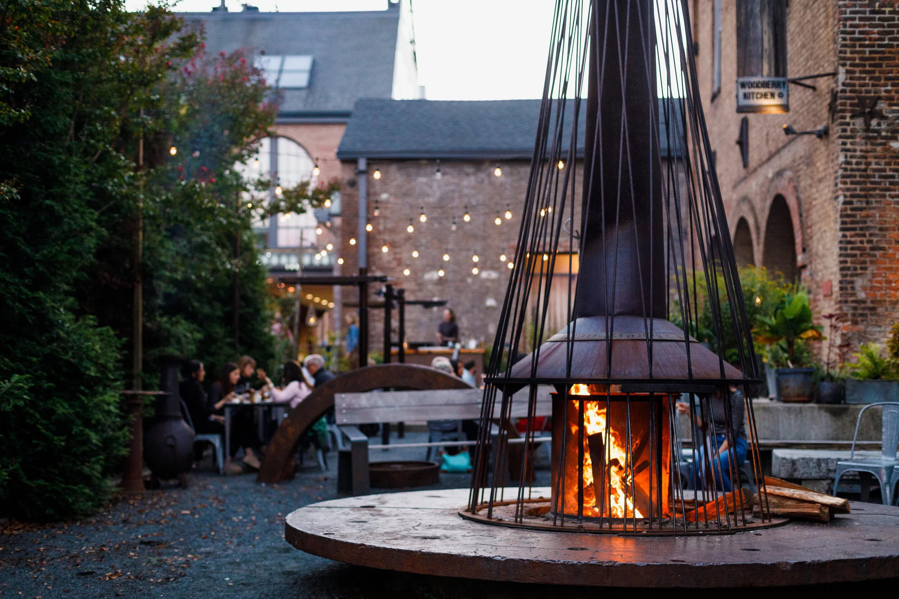
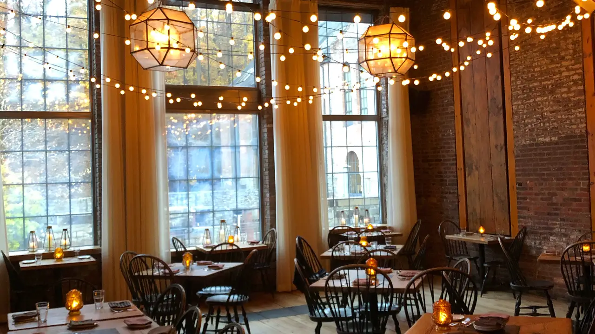

Food
Woodberry Kitchen
-

Woodberry Kitchen, located in Baltimore, Maryland, is a well-known farm-to-table restaurant. This culinary jewel, located in the historic Woodberry district, is known for its devotion to sourcing local, sustainable products and providing an extraordinary dining experience. The rustic and pleasant setting of the restaurant, built in a beautifully renovated mill, complements the meal. The seasonal menu at Woodberry Kitchen is designed to highlight the flavors of the Chesapeake region, with dishes reflecting the changing seasons and the best of local ingredients. It's a favorite among foodies searching for a taste of the Mid-Atlantic's finest in a lovely and environmentally friendly setting, thanks to its superb cuisine, artisan cocktails, and warm ambiance.
-

The menu at Woodberry Kitchen featured a diverse selection of meals inspired by fresh, locally sourced ingredients. Typical appetizers on the menu featured handmade bread and spreads, innovative salads, and charcuterie boards. You can expect a range of dishes for the main course, including seafood like Chesapeake Bay blue crab and locally caught fish, as well as farm-raised meats, vegetable-centric alternatives, and unique grain-based dishes. The cuisine at Woodberry Kitchen is intended to promote regional flavors while also demonstrating the culinary team's commitment to sustainability and quality.